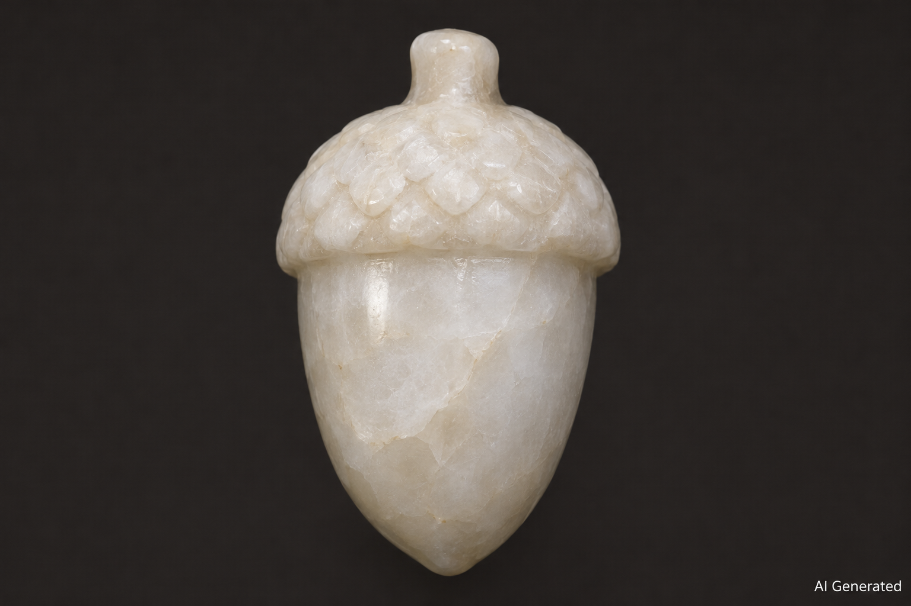

Galaktyt
Galaktyt, zwany także Galaktyt, Galaktitis, Galaricid, Milkstone i innymi nazwami, jest popielatym kamieniem, który po zmieleniu wydziela płyn o smaku mleka. ¹ Występuje w Nilu i Achelousie, a jego moc pobudza laktację u karmiących kobiet i owiec. ¹ Przywiązany do uda ułatwia poród; ² ³ trzymany w ustach aż do rozpuszczenia mąci umysł i osłabia pamięć. ² ⁴ Pokrewna odmiana, zwana Galatid lub Gelatia, jest biała, ma kształt żołędzia, jest twarda jak diament i leczy choroby gorączkowe. ⁵
Opis ogólny
Opis
Galaktyt ma kolor popielaty, choć niektórzy nazywają go białym jak mleko. ⁴ Po zmieleniu lub roztarciu kamień wydziela biały płyn o barwie i smaku mleka; ¹ ⁴ jego proszek również ma smak mleka. ² ³ Kamień ten występuje nad Nilem i rzeką Achelous; ³ inny przekaz wskazuje rzekę Athaleus w Egipcie. ³
W jednym przekazie szmaragd o białych żyłkach nosi nazwę Galaktitis. ¹ ⁴ Jest to odrębna nazwa i źródła nie ustalają, że taki szmaragd to ten sam kamień, co mleczny Galaktyt.
Właściwości
Laktacja i poród
Galaktyt pobudza wydzielanie mleka u karmiących kobiet. Kamień należy zmieszać z miodem pitnym i podać karmiącej matce do wypicia zaraz po kąpieli, przed posiłkiem. ² Można też przewlec perforowany kamień przez nić z wełny owcy karmiącej jagnię i zawiesić go na szyi kobiety karmiącej; ma to pobudzić wydzielanie mleka. ² ³ ⁴ Zawiązany na udzie podczas bólów porodowych ułatwia poród; jeden przekaz zaleca nić z wełny owcy ciężarnej. ⁴
Galaktyt zawieszony na szyi niemowlęcia ma pobudzać wydzielanie śliny. ¹
Stada i świerzb
Aby zwiększyć ilość mleka u owiec i uchronić je przed chorobą, rozetrzyj Galaktyt z solą i wymieszaj z wodą używaną do rytualnego oczyszczenia. ² Przed wschodem słońca obejdź z tą mieszanką owczarnię; inny przekaz zaleca nocne skropienie nią zagrody. ³ Ma ona pobudzać wydzielanie mleka i odpędzać pomór lub świerzb. ² Jedno ze źródeł dodaje, że owce stają się płodne i wolne od świerzbu, a kamień leczy tę chorobę również u ludzi. ⁴
Umysł, pamięć i uczucia
Sok z Galaktyt trzymany w ustach ma mącić rozum; ² ³ pozostawiony w ustach aż do rozpuszczenia może powodować utratę pamięci. ¹ Ma także sprawiać, że człowiek zapomina o dawnych sporach i troskach. Sproszkowany kamień należy trzykrotnie utrzeć z wodą, wysuszyć i wypić, popijając czystą wodą; pogodzi on skłóconych i połączy ich trwałą miłością. ⁴ Jeden przekaz przypisuje mu więcej mocy niż innym kamieniom, ostrzega jednak, że rozpuszczony w ustach wywołuje szał i przerażające omamy.
Inne moce
Noszony przy sobie Galaktyt ma natychmiast łagodzić gniew króla i przywracać jego przychylność temu, kto go obraził. Przynosi zwycięstwo w sprawach prawnych, czyni posiadacza bystrym, życzliwym i elokwentnym oraz chroni przed zaklęciami. Sprawia, że magiczne pisma stają się zrozumiałe i zmusza przywołane duchy do odpowiedzi. ⁴ Zawiązany na szyi łagodzi ból zęba.
Odmiany
| Podtyp | Wygląd | Właściwości |
|---|---|---|
| Podtyp I: Gelatia biała i żołędziokształtna | Jasnobiały, w kształcie żołędzia, twardy jak Diament. | Zimny i ledwo ogrzany ogniem; ⁵ uspokaja gniew, powstrzymuje pożądanie i leczy gorączkowe choroby. ⁵ |
Podtyp I: Gelatia biała i żołędziokształtna

Ta odmiana, zwana także Galatid lub Galaktika, jest biała i lśniąca, ma kształt żołędzia i jest twarda jak diament. ⁵ Jej drobne pory nie przepuszczają ognia, dlatego pozostaje tak chłodna, że ogień ledwie może ją ogrzać. Zatrzymuje pożądanie, uspokaja gniew i leczy gorączkowe choroby. ⁵
Źródła
1. Św. Izydor z Sewilli — Etymologie XVI, X.20
Batrachit łatwo rozwarstwia się niczym skorupa glinianego naczynia. Galaktyt ma popielatą barwę i przyjemny smak. Nazwa nawiązuje do mlecznej substancji, którą wydziela po zmieleniu (por. γάλα (gala), dopełniacz γάλακτος (galaktos), „mleko”).
Galaktitis (por. gr. γάλα (gala), dopełniacz γάλακτος (galaktos), „mleko”) po potarciu wydziela biały płyn o smaku mleka. Zawieszony na szyi kobiety karmiącej ma pobudzać wytwarzanie mleka. Zawieszony na szyi niemowlęcia ma pobudzać ślinienie. Rozpuszczony w ustach ma zacierać pamięć. Kamień ten występuje w Nilu i Acheloosie. Niektórzy nazywają tak szmaragd z białymi żyłkami.
2. Marbod z Rennes — De lapidibus, XLII
Popielaty galaktyt zmieszany z miodem pitnym ma pobudzać laktację. Kobieta, która właśnie wyszła z kąpieli, powinna wypić ten wzmacniający napój przed posiłkiem. Można też przewlec perforowany kamień przez nić z wełny owcy karmiącej jagnię i zawiesić go na jej szyi — ma to zwiększyć ilość mleka. Kamień przewiązany na udzie podczas bólów porodowych ułatwia poród. Zmieszaj go z solą i wodą lustralną, a przed wschodem słońca obejdź z tą mieszaniną zagrodę: owce mają dawać obficie mleko, a stado ma uniknąć zarazy. Tak wielką wartość przypisywali mu starożytni, uznając go za cenniejszy od wszystkich innych kamieni.
Jeśli jednak rozpuści się go w ustach, wywołuje ślepe szaleństwo i straszliwe widziadła, które dręczą umysł. Z rozkruszonego kamienia sączy się mleczna rosa o smaku mleka — jeśli wierzyć opowieści. Ten potężny klejnot spławia Nil w Egipcie, a Achelous sławi jego pochodzenie.
3. Św. Albert Wielki — Księga minerałów, Traktat II
Galaricid (kamień mleczny), zwany także galariktid, przypomina popiół. Występuje głównie w Nilu i Acheloosie. Jego proszek smakuje jak mleko, a sok trzymany w ustach ma mącić umysł. Księgi o amuletach leczniczych podają, że kamień zawieszony na szyi wspomaga laktację, a przywiązany do uda ułatwia poród. Egipscy pasterze twierdzą, że sproszkowany z solą, zmieszany z wodą i rozsypany nocą wokół owczarni zwiększa wydzielanie mleka u owiec i odpędza świerzb. Powszechnie uważa się go za środek przeciw świerzbowi.
4. Camillo Leonardi — Speculum Lapidum
Galaktid (Galaricid) to kamień barwy popiołu, choć niektórzy opisują go jako mlecznobiały. Występuje w Nilu oraz w rzece zwanej Athaleus. Po zmieleniu i zmieszaniu z wodą ma kolor i smak mleka. Niektórzy uważają, że jest to szmaragd otoczony białymi żyłkami. Ze względu na rozmaite moce kamień nosi różne nazwy: niektórzy nazywają go elebon, magowie — senochitem, a inni — graffitem, galbatem lub anachitem. Magowie wychwalają go bez miary: twierdzą, że pozwala rozumieć magiczne pisma i zmusza przywołane duchy do udzielania odpowiedzi. Ma też sprawiać, że człowiek zapomina o dawnych sporach i kłopotach. Noszony przy sobie, ma natychmiast uśmierzać gniew i przywracać przychylność króla, którego noszący mógł obrazić. Ma zapewniać zwycięstwo w sprawach sądowych, bystrość, życzliwość i elokwencję, a także chronić przed czarami. Zawieszony na szyi ma wspomagać laktację u kobiet. Przywiązany do uda wełnianą nitką z runa ciężarnej owcy ma ułatwiać poród. Trzymany w ustach aż do rozpuszczenia może jednak mącić umysł. Egipscy pasterze twierdzą, że kamień starty z solą, zmieszany z wodą i rozpryskany nocą wokół owczarni pobudza wydzielanie mleka u owiec, zwiększa ich płodność i leczy świerzb. Uważa się, że leczy także świerzb u ludzi. Zawieszony na szyi ma łagodzić ból zębów. Ma również godzić zwaśnionych: należy go trzykrotnie zmielić w wodzie, wysuszyć, a następnie popić czystą wodą; według przekazu skłóceni zakochają się w sobie, a ich miłość nigdy już się nie rozpadnie ani nie wygaśnie.
5. Camillo Leonardi — Speculum Lapidum, Galatid
Galatid, Galaktika, lub Gelatia to kamień, który ma wiele różnych nazw. Jest biały, jasny, w kształcie żołędzia i bardzo twardy, podobnie jak diament; jest tak zimny, że ledwo można go ogrzać ogniem. Dzieje się tak dlatego, że jego pory są bardzo małe i dlatego nie przepuszczają ognia. Ze względu na swoją zimną naturę powstrzymuje pożądanie, uspokaja gniew i jest dobrym lekarstwem na wszystkie gorączkowe choroby ludzkiego ciała.
6. Bartholomaeus Anglicanus — De proprietatibus rerum, Księga XVI, rozdział 50: Galactile
Galaktyl (galaktil) jest popielatym kamieniem o słodkim smaku i zapachu. Uderzony wydziela coś w rodzaju białego mleka, jak pisze Izydor. Trzymany w ustach mąci rozum. Noszony na szyi ma wspomagać laktację, a przywiązany do ud ułatwia poród. Jeśli zmiesza się go z wodą i solą, a następnie skropi nim pole, owce będą dawały dużo mleka i pozbędą się świerzbu, jak pisze Dioskurydes.
7. Tomasz z Cantimpré — Liber de natura rerum, Księga XIV: “O kamieniach szlachetnych”, Galartid (Galaktyt)
Galaktyt to kamień przypominający popiół. Zmielony z mlekiem i wypity zwiększa ilość mleka i przynosi ulgę kobietom w ciąży. Odpędza świerzb. Występuje w rzece Nil.